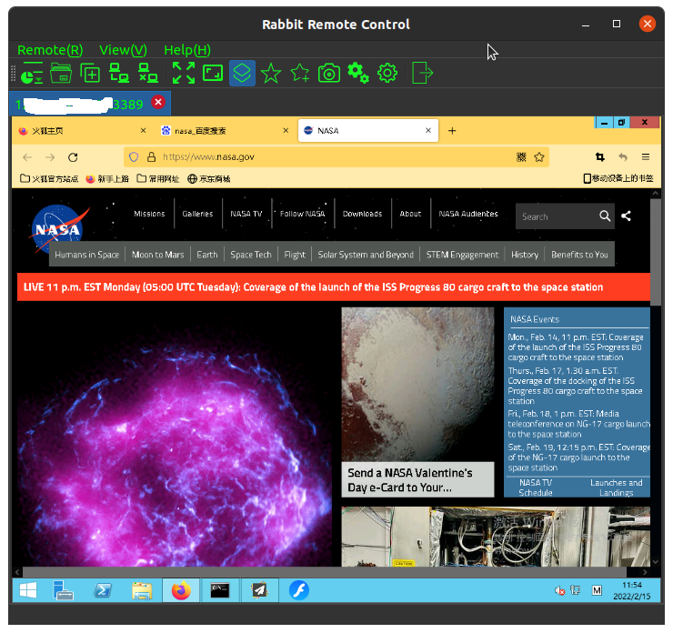
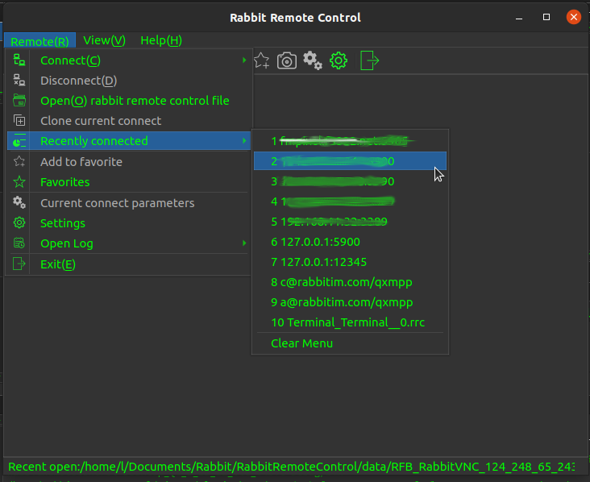
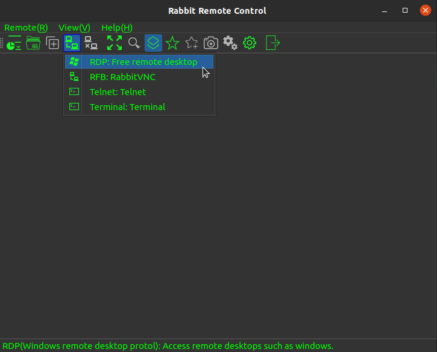
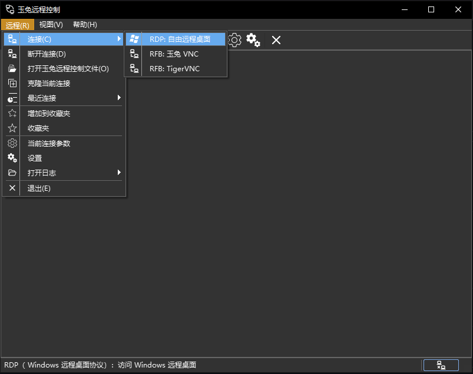
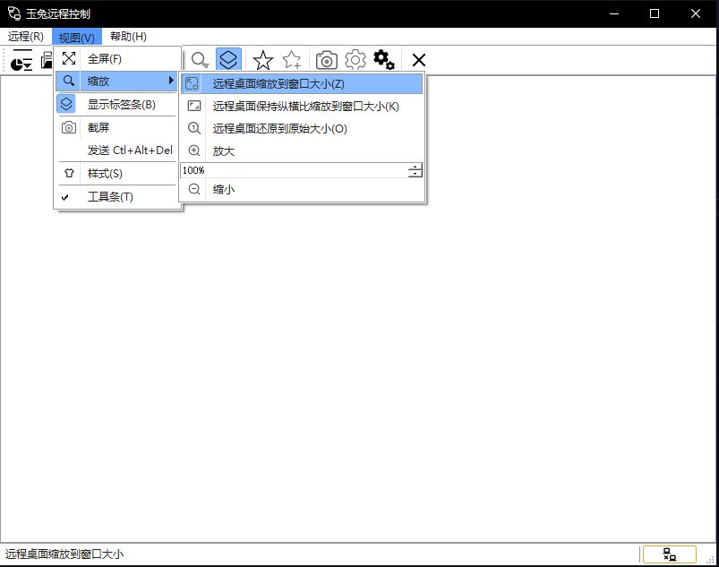

Author: Kang Lin kl222.nosp@m.@126.nosp@m..com
:cn: 中文
- Introduction
- Screenshot
- Project repository position
- Functions
- Supported operating system
- Supported multiple languages
- Supported protocols
- Remote control protocols
- Network protocols
- Function list
- Plugins
- Full Documentation
- Status
- Sponsorship and Donations
- Contribution
- Road map
- Download
- Change log
- Development
- License Agreement
Introduction
Rabbit Remote Control is a cross-platform, multi-protocol remote control software.
Allows you to use any device and system in anywhere and remotely manage any device and system in any way.
It include remote desktop, remote terminal etc remote control functions.
Screenshot
| Main window | Recent list menu | Connect |
|  |  |  |
Multiple style
| Default style | Black-Green style | Black style | White style |
 | |  |  |
Project repository position
Functions
Supported operating system
See: https://doc.qt.io/qt-5/supported-platforms.html
- [x] Windows 7 SP1 and later
- [x] Unix/Linux
- [x] Android
- [ ] mac os
- [ ] IPHONE
- [ ] WINCE
I have no devices so I did not compile and test. Please test by yourself if you have devices. Interested and capable friends are welcome to participate in the development of the project.
If you want to donate the developed devices for me, please contact: (email: kl222.nosp@m.@126.nosp@m..com)
| Windows | Unix/linux | Android | MAC | IPHONE | WINCE |
| vnc | ✓ | ✓ | | | | |
| RDP | ✓ | ✓ | | | | |
| Spice | | | | | | |
| Scrcpy | | | | | | |
| Terminal | | ✓ | | | | |
| SSH | | ✓ | | | | |
| TELNET | | ✓ | | | | |
| FTP | | | | | | |
Legend: ✓ : completed; … : working; ⭕ : not completed; Empty: not started; ❌: not supported
Supported multiple languages
- [x] English
- [x] Chinese
- [x] Simplified Chinese
- [x] Traditional Chinese
Supported protocols
Remote control protocols
Network protocols
- [x] Peer-to-Peer (P2P) protocol
- [x] Proxy
Function list
| Server | Client | Desktop | Clipboard | File | Audio | Redirection | P2P | Proxy | Terminal |
| RDP | ✓ | ✓ | ✓ | ✓ | …… | ✓ | …… | | | ❌ |
| RFB | …… | ✓ | ✓ | ✓ | | ❌ | ❌ | ✓ | ✓ | |
| Spice | | | | | | | ❌ | | | |
| Scrcpy | | | | | | | ❌ | | | |
| Terminal | | ⭕ | ❌ | ✓ | ❌ | ❌ | ❌ | | | |
| TELNET | | ⭕ | ❌ | ✓ | ❌ | ❌ | ❌ | | | |
| SSH | | ⭕ | ❌ | ✓ | | ❌ | ❌ | | | |
| FTP | | | ❌ | | | ❌ | ❌ | | | |
Legend: ✓ : completed; … : working; ⭕ : not completed; Empty: not started; ❌: not supported
| Proxy | P2P |
| RabbitVNC | ✓ | ✓ |
| TigerVNC | ✓ | ✓ |
| LibVNC | | |
| FreeRDP | | |
Legend: ✓ : completed; … : working; ⭕ : not completed; Empty: not started; ❌: not supported
Plugins
Full Documentation
Status


Build status
| master | develop |
| Linux |  |  |
| Windows |   |   |
| Android |  |  |

Sponsorship and Donations
If this software is useful to you, or you like it, please donate and support the author. Thank you!

If it cannot be displayed, please open:
Contribution
If you're wondering how could you help, fear not, there are plenty of ways:
Some of them are:
- Donation - Provide funds and devices for this project :smile:
- The project is need server with public IP
- Spread the good word about RabbitRemoteControl to make it more popular :smile:
- Have an opinion? Make sure to voice it in the Discussions that need it :wink:
- Fixing easy Issues or Issues that need help. Make sure to read Contributing first though :wink:
- Testing and reporting bugs
- Translating, it's easy :smile:
- Reviewing and testing pull requests – you don't need to be able to code to do that :wink:
- Distribute this program to various operating systems
- Linux
- Ubuntu, Debian
- Redhat
- openSUSE
- FreeBSD
- CentOS
- Arch Linux
- Unix
- Windows 10 mall
- Android
- Be finished unsupported protocols
Road map
| Server | Client | Desktop | Clipboard | File | Audio | Redirection | P2P | Proxy | Terminal |
| RabbitVNC | ✓ | ✓ | ✓ | ✓ | | ❌ | ❌ | ✓ | ✓ | |
| TigerVNC | ✓ | ✓ | ✓ | ✓ | | ❌ | ❌ | ✓ | ✓ | |
| LibVNCServer | ✓ | ✓ | ✓ | ✓ | | ❌ | ❌ | | | |
| RDP | ✓ | ✓ | ✓ | ✓ | …… | ✓ | …… | | | ❌ |
| Spice | | | | | | | ❌ | | | |
| Scrcpy | | | | | | | ❌ | | | |
| Terminal | | ⭕ | ❌ | ✓ | | ❌ | ❌ | | | |
| SSH | | ⭕ | ❌ | ✓ | | ❌ | ❌ | | | |
| TELNET | | ⭕ | ❌ | ✓ | ❌ | ❌ | ❌ | | | |
| FTP | | | ❌ | | | ❌ | ❌ | | | |
Legend: ✓ : completed; … : working; ⭕ : not completed; Empty: not started; ❌: not supported
- The development of common remote control protocol clients and some servers has been completed. It has preliminary practical functions, and needs to be tried by small partners, find bugs, and put forward suggestions that can be more convenient to use in practical applications.
- For terminal remote control, because qtermwidget only supports LINUX/UNIX, it needs to support other platforms.
- Peer-to-Peer (P2P) remote control is finished. which is also a feature of this project. See requirements for details: https://github.com/KangLin/RabbitRemoteControl/issues/7
Download
- Change log
- Semantic Versioning: https://semver.org/
- Latest Release:
- Current version: 0.0.26
- Windows: Supported WINDOWS 7 and later version
- Install package: RabbitRemoteControl_setup_v0.0.26.exe
- MD5SUM file: RabbitRemoteControl_setup_v0.0.26.exe.md5sum
- No need to install package: RabbitRemoteControl_windows_v0.0.26.zip
- MD5SUM file: RabbitRemoteControl_windows_v0.0.26.zip.md5sum
- Ubuntu:
- Ubuntu 20.04: rabbitremotecontrol_0.0.26_amd64_Ubuntu-20.04.deb
sudo apt install ./rabbitremotecontrol_0.0.26_amd64_Ubuntu-20.04.deb
# If you're on an older Linux distribution, you will need to run this instead:
# sudo dpkg -i rabbitremotecontrol_0.0.26_amd64_Ubuntu-20.04.deb
# sudo apt-get install -f # Install dependencies
- MD5SUM file: rabbitremotecontrol_0.0.26_amd64_Ubuntu-20.04.deb.md5sum
- Ubuntu 18.04: rabbitremotecontrol_0.0.26_amd64_Ubuntu-18.04.deb
sudo apt install ./rabbitremotecontrol_0.0.26_amd64_Ubuntu-18.04.deb
# If you're on an older Linux distribution, you will need to run this instead:
# sudo dpkg -i rabbitremotecontrol_0.0.26_amd64_Ubuntu-18.04.deb
# sudo apt-get install -f # Install dependencies
- MD5SUM file: rabbitremotecontrol_0.0.26_amd64_Ubuntu-18.04.deb.md5sum
Development
<a href="https://kanglin.github.io/RabbitRemoteControl/English/html/index.html" >Development documentation</a>
Dependent
Tools
- Qt
- C/C++ compiler
- CMake
- Automake、 Autoconf、 Make
- Git
Dependent libraries
Compilation
@ref /home/runner/work/RabbitRemoteControl/RabbitRemoteControl/License.md "License.md"
Please abide by the License.md of this project and the license agreement of the dependent library, and thank the authors of dependent library and tools.
](https://github.com/KangLin/RabbitCommon/raw/master/Src/Resource/image/Contribute.png){kind=link}
{kind=link}
{kind=link}